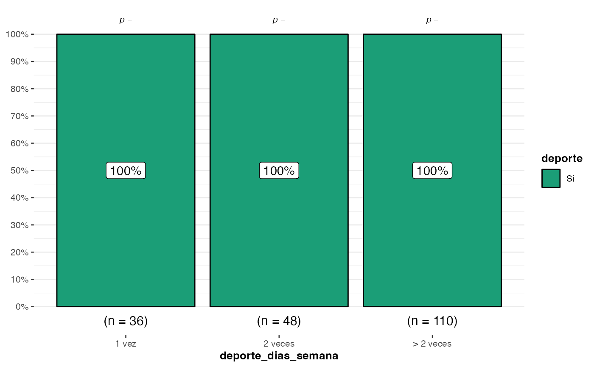
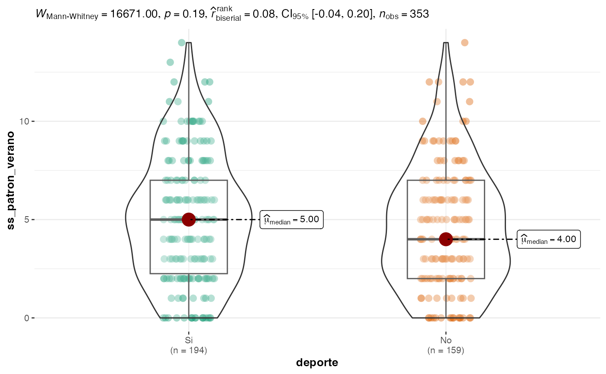
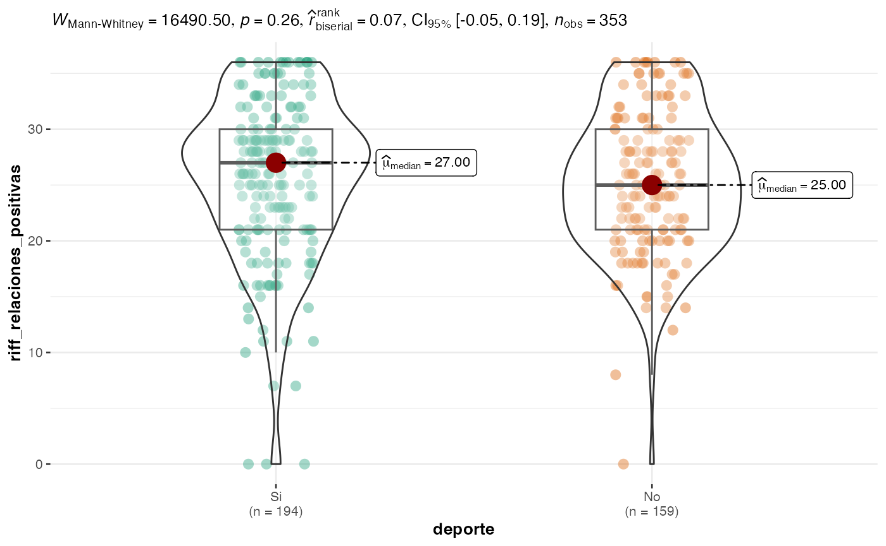
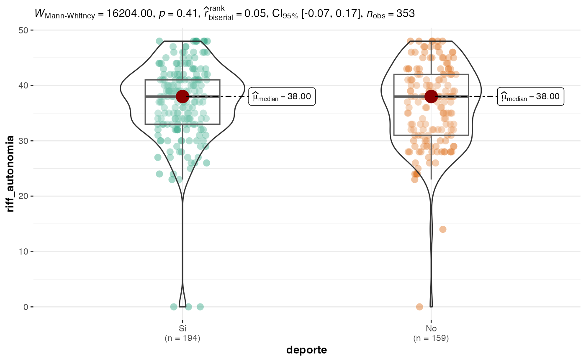
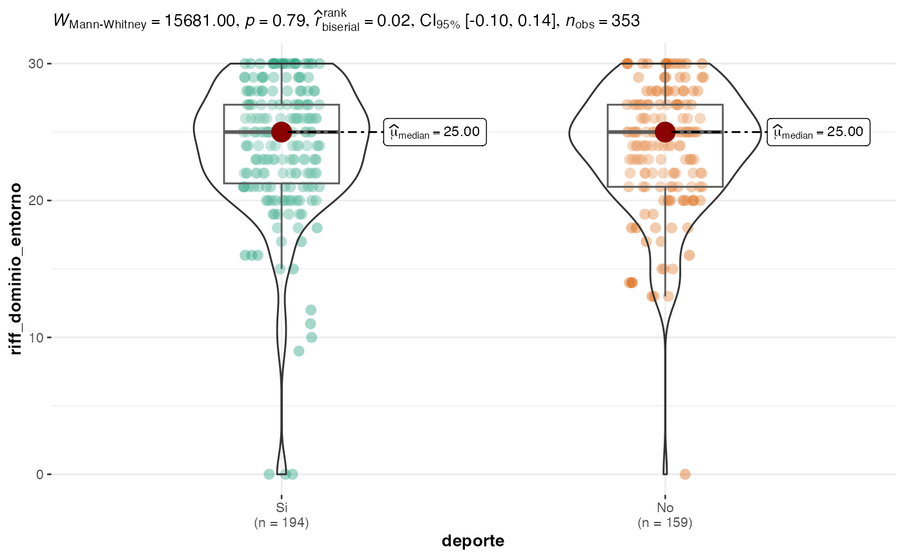

Análisis agrupados por deporte
Código:vignettes/articles/comparacion_deporte.Rmd
comparacion_deporte.Rmd
# Paquetes necesarios
library(ggstatsplot)
# Y por supuesto cargamos el paquete del estudio
library(seasonalSensitivity)Deporte
ggstatsplot::ggbarstats(dataset, deporte, genero)Si bien no existe una asociación significativa entre factores, podemos ver que existe una proporción mayor de personas que realizan deporte en el grupo femenino.
Días de la semana que realiza deporte
ggstatsplot::ggbarstats(dataset, deporte, deporte_dias_semana)
De manera esperable, aquellos que sí hacen deporte son los que más deporte hacen dentro de la semana, aunque de manera un poco más inusual, vemos que aquellos que no hacen deporte igual manifestaron hacer deporte almenos una vez a la semana.
Intensidad del deporte
ggstatsplot::ggbarstats(dataset, deporte, deporte_intensidad)La tendencia se repita con la intensidad del deporte realizado, si bien nos hallamos con lo obvio, aquellos que hacen deporte tienden a hacerlo de manera más intensa que aquellos que no hacen deporte, aún así no deja de ser llamativo por qué algunos que no hacen deporte manifiestan realizarlo a mediana o alta intensidad. Requiere mayor exploración.
Minutos por sesión
ggstatsplot::ggbetweenstats(dataset, deporte, deporte_minutos_sesion, type = "np")
Similar a lo anterior, sigue apareciendo un cúmulo de personas que mencionaron que no hacían deporte, sin embargo, declaran dedicar algún tiempo para hacer deporte a la semana. Requiere mayor exploración.
Sensibilidad estacional
Patrón de verano
ggstatsplot::ggbetweenstats(dataset, deporte, ss_patron_verano, type = "np")
No se observaron diferencias en ss_patron_verano por deporte
Patrón de invierno
ggstatsplot::ggbetweenstats(dataset, deporte, ss_patron_invierno, type = "np")No se observaron diferencias en ss_patron_invierno por deporte.
Tipo de patrón estacional
ggstatsplot::ggbarstats(dataset, deporte, ss_patron_tipo)No se observaron diferencias en ss_patron_tipo por deporte.
Índice de severidad estacional
ggstatsplot::ggbarstats(dataset, deporte, ss_index)No se observaron diferencias en ss_index por deporte.
Clasificación de severidad de estacionalidad
ggstatsplot::ggbarstats(dataset, deporte, ss_severidad)No observamos una asociación entre la severidad de la estacionalidad y el deporte, sin embargo, la proporción de personas que realizan deporte es mayor en el grupo leve.
Bienestar de Ryff
Autoaceptación
ggstatsplot::ggbetweenstats(dataset, deporte, riff_autoaceptacion, type = "np")No observamos diferencias en el dominio de autoaceptación por deporte.
Relaciones positivas
ggstatsplot::ggbetweenstats(dataset, deporte, riff_relaciones_positivas, type = "np")
No observamos diferencias en el dominio de relaciones positivas por deporte.
Autonomía
ggstatsplot::ggbetweenstats(dataset, deporte, riff_autonomia, type = "np")
No observamos diferencias en el dominio de autonomía por deporte.
Dominio del entorno
ggstatsplot::ggbetweenstats(dataset, deporte, riff_dominio_entorno, type = "np")
No observamos diferencias en el dominio de dominio del entorno por deporte.
Crecimiento personal
ggstatsplot::ggbetweenstats(dataset, deporte, riff_crecimiento_personal, type = "np")
No observamos diferencias en el dominio de crecimiento personal por deporte.
Propósito en la vida
ggstatsplot::ggbetweenstats(dataset, deporte, riff_proposito_vida, type = "np")No observamos diferencias en el dominio de propósito en la vida por deporte.